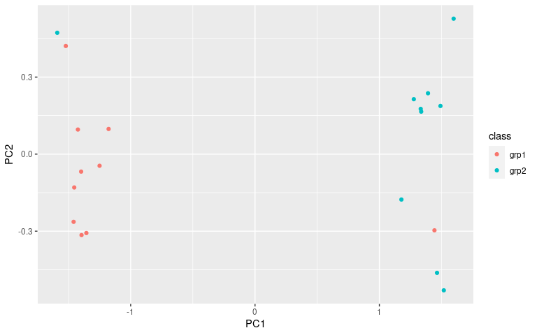
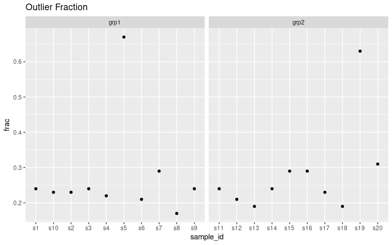
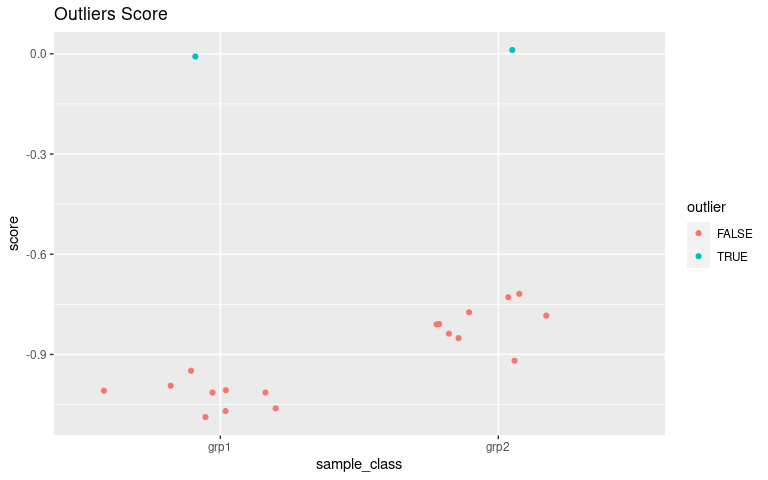

A set of useful functions for calculating various measures from high-feature datasets and visualizing them.
In addition to internal documentation, the package is also documented heavily here.
This package combines my needs for visualizing sample-sample correlations using heatmaps, and novel quality control measures that apply to different types of -omics or high-feature datasets proposed by Gierlinski et al., 2015, namely the median_correlation and outlier_fraction functions.
Installation
Examples
These examples show the primary functionality. We will apply the visualizations to a two group dataset. However, all of the functions are still applicable to datasets with more than two groups. The examples below are for a dataset where there has been a sample swapped between the two groups (i.e. there is a problem!). If you want to see how the visualizations compare between a good dataset and a bad dataset, see the quality_control vignette.
library(visualizationQualityControl)
library(ggplot2)
library(ggforce)
data("grp_cor_data")
exp_data = grp_cor_data$data
rownames(exp_data) = paste0("f", seq(1, nrow(exp_data)))
colnames(exp_data) = paste0("s", seq(1, ncol(exp_data)))
sample_info = data.frame(id = colnames(exp_data), class = grp_cor_data$class)
exp_data[, 5] = grp_cor_data$data[, 19]
exp_data[, 19] = grp_cor_data$data[, 5]
sample_classes = sample_info$classVisualize PCA Component Scores
pca_data = prcomp(t(exp_data), center = TRUE)
pca_scores = as.data.frame(pca_data$x)
pca_scores = cbind(pca_scores, sample_info)
ggplot(pca_scores, aes(x = PC1, y = PC2, color = class)) + geom_point()
To see how much explained variance each PC has, you can calculate them:
knitr::kable(visqc_score_contributions(pca_data$x))| pc | variance | percent | cumulative | labels | |
|---|---|---|---|---|---|
| PC1 | PC1 | 2.0852320 | 0.6853218 | 0.6853218 | PC1 (69%) |
| PC2 | PC2 | 0.0944324 | 0.0310357 | 0.7163574 | PC2 (3.1%) |
| PC3 | PC3 | 0.0827594 | 0.0271993 | 0.7435567 | PC3 (2.7%) |
| PC4 | PC4 | 0.0802501 | 0.0263746 | 0.7699313 | PC4 (2.6%) |
| PC5 | PC5 | 0.0758842 | 0.0249397 | 0.7948710 | PC5 (2.5%) |
| PC6 | PC6 | 0.0750434 | 0.0246634 | 0.8195344 | PC6 (2.5%) |
| PC7 | PC7 | 0.0668954 | 0.0219855 | 0.8415199 | PC7 (2.2%) |
| PC8 | PC8 | 0.0600538 | 0.0197370 | 0.8612569 | PC8 (2%) |
| PC9 | PC9 | 0.0590223 | 0.0193980 | 0.8806548 | PC9 (1.9%) |
| PC10 | PC10 | 0.0520022 | 0.0170908 | 0.8977456 | PC10 (1.7%) |
| PC11 | PC11 | 0.0507126 | 0.0166670 | 0.9144126 | PC11 (1.7%) |
| PC12 | PC12 | 0.0450374 | 0.0148018 | 0.9292143 | PC12 (1.5%) |
| PC13 | PC13 | 0.0398570 | 0.0130992 | 0.9423135 | PC13 (1.3%) |
| PC14 | PC14 | 0.0380927 | 0.0125194 | 0.9548329 | PC14 (1.3%) |
| PC15 | PC15 | 0.0337662 | 0.0110974 | 0.9659303 | PC15 (1.1%) |
| PC16 | PC16 | 0.0304897 | 0.0100206 | 0.9759509 | PC16 (1%) |
| PC17 | PC17 | 0.0271052 | 0.0089083 | 0.9848592 | PC17 (0.89%) |
| PC18 | PC18 | 0.0252369 | 0.0082942 | 0.9931534 | PC18 (0.83%) |
| PC19 | PC19 | 0.0208322 | 0.0068466 | 1.0000000 | PC19 (0.68%) |
| PC20 | PC20 | 0.0000000 | 0.0000000 | 1.0000000 | PC20 (0.0000000000000000000000000000029%) |
visqc_heatmap
Calculate sample-sample correlations and reorder based on within class correlations. We recommend a transform agnostic correlation like Kendall-tau that can also handle missing data when necessary. Here we use the {ici_kendalltau} function from our ICIKendallTau package.
rownames(sample_info) = sample_info$sample
data_cor = ICIKendallTau::ici_kendalltau(t(exp_data))
data_order = similarity_reorderbyclass(data_cor$cor, sample_info[, "class", drop = FALSE], transform = "sub_1")And then generate a colormapping for the sample classes and plot the correlation heatmap.
data_legend = generate_group_colors(2)
names(data_legend) = c("grp1", "grp2")
row_data = sample_info[, "class", drop = FALSE]
row_annotation = list(class = data_legend)
library(viridis)
library(circlize)
colormap = colorRamp2(seq(0.3, 1, length.out = 50), viridis::viridis(50))
visqc_heatmap(data_cor$cor, colormap, "Correlation", row_color_data = row_data,
row_color_list = row_annotation, col_color_data = row_data,
col_color_list = row_annotation, row_order = data_order$indices,
column_order = data_order$indices)median_correlations
data_medcor = median_correlations(data_cor$cor, sample_info$class)
ggplot(data_medcor, aes(x = sample_id, y = med_cor)) + geom_point() +
facet_grid(. ~ sample_class, scales = "free_x") + ggtitle("Median Correlation")
ggplot(data_medcor, aes(x = sample_class, y = med_cor)) +
geom_sina() +
ggtitle("Median Correlation")
outlier_fraction
data_outlier = outlier_fraction(t(exp_data), sample_info$class)
ggplot(data_outlier, aes(x = sample_id, y = frac)) + geom_point() +
facet_grid(. ~ sample_class, scales = "free_x") + ggtitle("Outlier Fraction")
ggplot(data_outlier, aes(x = sample_class, y = frac)) +
geom_sina() +
ggtitle("Outlier Fraction")determine_outliers
We can combine the median correlations and outlier fractions into a single score and then examine the distribution of scores to look for outliers.
out_samples = determine_outliers(data_medcor, data_outlier)
ggplot(out_samples, aes(x = sample_id, y = score, color = outlier)) +
geom_point() +
facet_wrap(~ sample_class, scales = "free_x") +
ggtitle("Outliers Score")
ggplot(out_samples, aes(x = sample_class, y = score, color = outlier, group = sample_class)) +
geom_sina() +
ggtitle("Outliers Score")
Here we can see the outliers by their combined score. However, in this case we don’t actually want to remove the samples. In this example, what actually happened was that two samples got their sample_class wrong. And we can see that by going back to the correlation heatmap, that this is the case by the high correlation values observed with the other class of samples.
Correlation that Includes Missing Values
When there are missing values (either NA, or 0 depending on the case), we can use the information-content-informed Kendall-tau. This works under the assumption that most missing data in -omics is because samples have values that fall below the detection limit. Because of this, missingness actually contributes some information that can be incorporated in the correlation. The package ICIKendallTau provides this correlation measure.
Lets add some missingness to our data.
exp_data = grp_cor_data$data
rownames(exp_data) = paste0("f", seq(1, nrow(exp_data)))
colnames(exp_data) = paste0("s", seq(1, ncol(exp_data)))
make_na = rep(FALSE, nrow(exp_data))
s1_missing = make_na
s1_missing[sample(length(make_na), 20)] = TRUE
s2_missing = make_na
s2_missing[sample(which(!s1_missing), 20)] = TRUE
exp_data2 = exp_data
exp_data2[s1_missing, 1] = NA
exp_data2[s2_missing, 1] = NA
cor_random_missing = ICIKendallTau::ici_kendalltau(t(exp_data2))$cor
cor_random_missing[1:4, 1:4]
## s1 s2 s3 s4
## s1 0.6000000 0.2447565 0.2733701 0.3015435
## s2 0.2447565 1.0000000 0.7058586 0.7200000
## s3 0.2733701 0.7058586 1.0000000 0.6925253
## s4 0.3015435 0.7200000 0.6925253 1.0000000
cor_random_missing_nw = ICIKendallTau::ici_kendalltau(t(exp_data))$cor
cor_random_missing_nw[1:4, 1:4]
## s1 s2 s3 s4
## s1 1.0000000 0.6953535 0.7074747 0.7224242
## s2 0.6953535 1.0000000 0.7058586 0.7200000
## s3 0.7074747 0.7058586 1.0000000 0.6925253
## s4 0.7224242 0.7200000 0.6925253 1.0000000What happens if we make the missingness match between them? That counts as information? If the feature is missing in the same samples, that is worth something?
exp_data = grp_cor_data$data
rownames(exp_data) = paste0("f", seq(1, nrow(exp_data)))
colnames(exp_data) = paste0("s", seq(1, ncol(exp_data)))
exp_data[s1_missing, 1:2] = NA
cor_same_missing = ICIKendallTau::ici_kendalltau(t(exp_data))$cor
cor_same_missing[1:4, 1:4]
## s1 s2 s3 s4
## s1 0.8000000 0.7794118 0.4643526 0.4717690
## s2 0.7794118 0.8000000 0.4631165 0.4771253
## s3 0.4643526 0.4631165 1.0000000 0.6925253
## s4 0.4717690 0.4771253 0.6925253 1.0000000Here we can see that the correlation between sapmles S1 and S2 has actually increased over the random missing case.
Fake Data Generation
Some fake data is stored in grp_cor_data that is useful for testing the median_correlation function. It was generated by:
library(fakeDataWithError)
set.seed(1234)
s1 = runif(100, 0, 1)
grp1 = add_uniform_noise(10, s1, 0.1)
model_data = data.frame(s1 = s1, s2 = grp1[, 1])
lm_1 = lm(s1 ~ s2, data = model_data)
lm_1$coefficients[2] = 0.5
s3 = predict(lm_1)
s4 = add_uniform_noise(1, s3, 0.2)
grp2 = add_uniform_noise(10, s4, 0.1)
grp_class = rep(c("grp1", "grp2"), each = 10)
grp_cor_data = list(data = cbind(grp1, grp2), class = grp_class)
library(fakeDataWithError)
set.seed(1234)
n_point = 1000
n_rep = 10
# a nice log-normal distribution of points with points along the entire range
simulated_data = c(rlnorm(n_point / 2, meanlog = 1, sdlog = 1),
runif(n_point / 2, 5, 100))
# go to log to have decent correlations on the "transformed" data
lsim1 = log(simulated_data)
# add some uniform noise to get lower than 1 correlations
lgrp1 = add_uniform_noise(n_rep, lsim1, .5)
# add some uniform noise to everything in normal space
sim1_error = add_uniform_noise(n_rep, simulated_data, 1, use_zero = TRUE)
# and generate the grp1 data in normal space
ngrp1 = exp(lgrp1) + sim1_error
# do regression to generate some other data
model_data = data.frame(lsim1 = lsim1, lsim2 = lgrp1[, 1])
lm_1 = lm(lsim1 ~ lsim2, data = model_data)
# reduce the correlation between them
lm_1$coefficients[2] = 0.5
lsim3 = predict(lm_1)
# and a bunch of error
lsim4 = add_uniform_noise(1, lsim3, 1.5)
# create group with added error to reduce correlation from 1
lgrp2 = add_uniform_noise(10, lsim4, .5)
# add error in original space
nsim4 = exp(lsim4)
sim4_error = add_uniform_noise(10, nsim4, 1, use_zero = TRUE)
ngrp2 = exp(lgrp2) + sim4_error
# put all data together, and make negatives zero
all_data = cbind(ngrp1, ngrp2)
all_data[(all_data < 0)] = 0
grp_class = rep(c("grp1", "grp2"), each = 10)
grp_exp_data = list(data = all_data, class = grp_class)